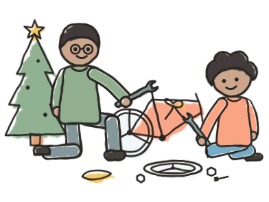
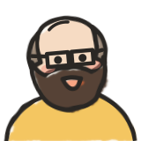
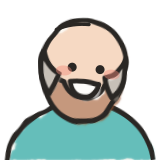
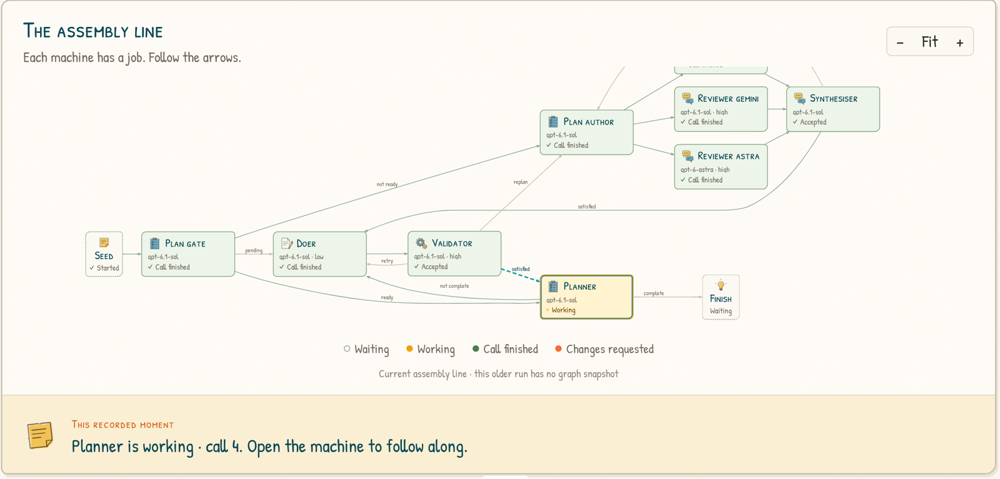
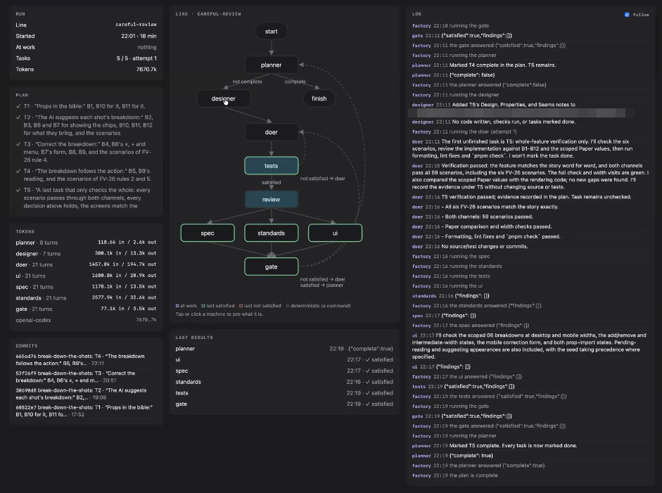
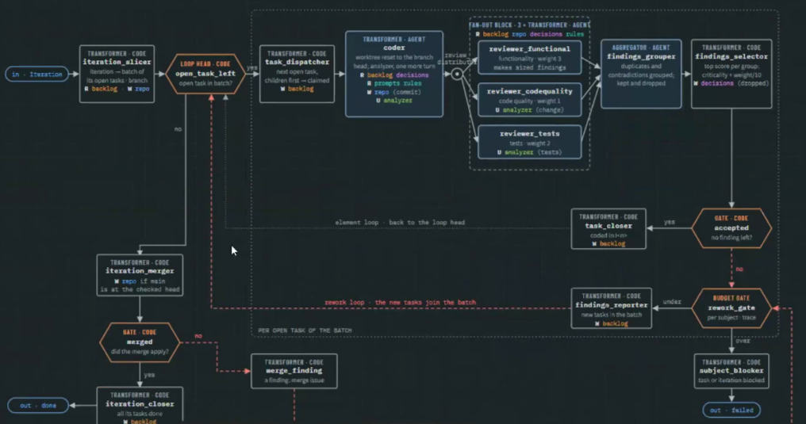
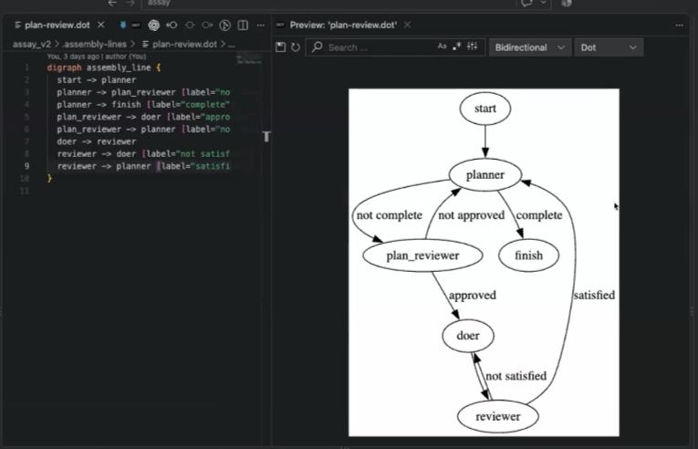

Welcome to
Build a Software Factory
Course overview

This course is built to give you that experience.


Who we are

Cucumber co-founder and creator of Example Mapping.

Building with AI agents since 2023. Author of Stone, an agentic harness framework.
25 years of DevOps, SRE and release engineering at Pivotal, VMware and Shopify.
Where it started: the Ralph loop
while :; do cat PROMPT.md | claude-code done
Wake up · read the plan · do the next step · tick it off · go back to sleep ↺
The factory you’ll build

Software that runs your assembly lines
Machines in an order you design
A coding agent that works with nobody in the chat
What past students built and learned



High level course overview
set up, and get hands on with a factory like the one you will be building
- 🔁 Build a loop
- 🏭 Customise your assembly lines
- 🔀 Add fan out
- 🧭 Watch and steer
coached by your own coding agent: “coach me”
Use your factory- 💡 Share capstone ideas
- 📝 Write your vision
- 🏗️ Start your capstone
- 🌱 Grow your capstone
on your capstone, a project of your own
continuous improvement · two backlogs · the foreman pattern · factories in the real world
You won’t be doing this alone
Slack, with students and alumni
Lean Coffee every Wednesday
09:30 Pacific
12:30 Eastern
17:30 UK
Feedback on your capstone vision and first plan
Your next step
- First, accept your Slack invitation and say hello
- Then meet your AI tutor, and get hands on with a factory like the one you will be building